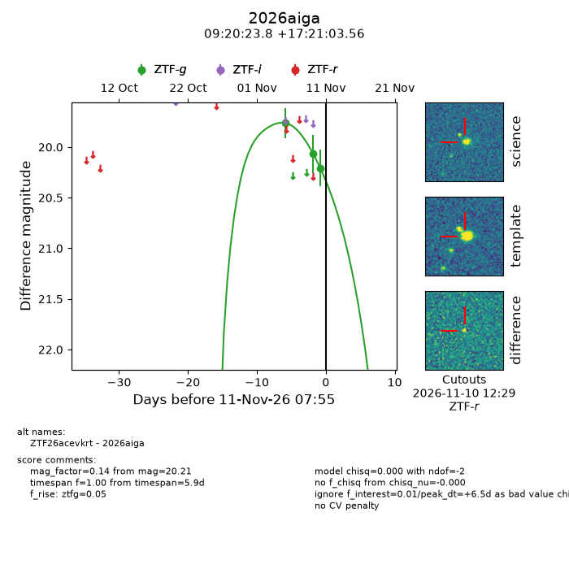
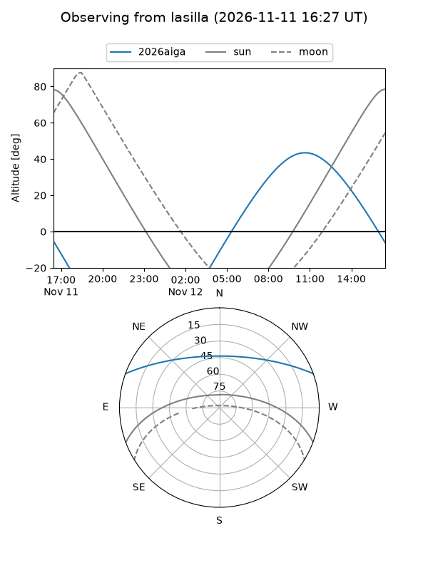
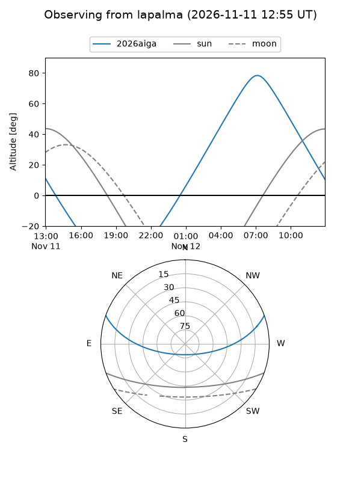
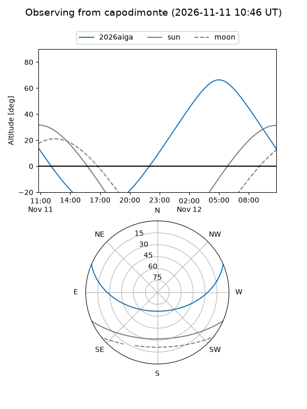
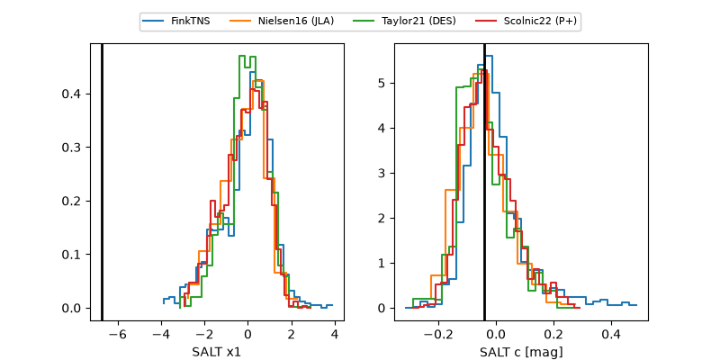

2026aiga
Target 2026aiga at 2026-11-11 19:52
Aliases and brokers:
FINK-ZTF: ztf.fink-portal.org/ZTF26acevkrt
Lasair-ZTF: lasair-ztf.lsst.ac.uk/objects/ZTF26acevkrt
ALeRCE-ZTF: alerce.online/object/ZTF26acevkrt
YSE-PZ: ziggy.ucolick.org/yse/transient_detail/2026aiga
TNS name: wis-tns.org/object/2026aiga
Direct TNS query: direct search
alt names
ZTF26acevkrt (ztf,fink_ztf)
2026aiga (tns,yse)
Coordinates:
equatorial (ra, dec) = 140.0990,+17.35099
equatorial (HMS+DMS) = 09:20:23.76,+17:21:03.56
galactic (l, b) = (212.7785,+40.54560)
Flags:
peak dt: +7.0
Photometry:
last ztfg=20.21
3 ztfg detections
Lightcurve

Visibility



Additional plots
